docs/qa/redteam/run-* (30 run dirs,
1,134 findings deduped on town+shot+mode+desc, 199 stage-2 refutals) · reproduce with
node tools/scene_redteam.mjs --rhetoric-census all — no APICALIBRATION matcher, Dellhollow findings
that match a user complaint are refuted at 19.3% (44/228) and everything else at
19.0% (99/522) — p = 0.92. canopy-wall, the user's #1 complaint, has been
matched 3 times and refuted zero times. The instrument is not filtering out the user's
complaints; it is arguing badly about one class of picture.
Denominator is findings the sceptic actually judged: a claim refuted by ray-census,
aim-census or no-verdict never reached it and is excluded (6 in the corpus).
Several runs --replay others, which reuses the stored sceptic reply, so identity is
(town, shot, mode, desc) and duplicates are dropped — 1,532 rows collapse to 1,134.
| subject class | N judged | refuted | rate | 95% CI |
|---|---|---|---|---|
| foliage-occlusion | 106 | 23 | 21.7% | [14.5, 29.7] |
| foliage, no occlusion word | 67 | 19 | 28.4% | [17.0, 35.9] |
| occlusion, not foliage | 253 | 50 | 19.8% | [15.0, 24.6] |
| everything else | 702 | 107 | 15.2% | [13.0, 18.5] |
Fisher exact, foliage-occlusion vs everything else pooled: p = 0.35. There is no whole-corpus foliage effect.
| stratum | foliage-occlusion refuted | everything else | Fisher p |
|---|---|---|---|
| Emberbrook · naive | 22/54 = 40.7% | 12/102 = 11.8% | 0.00007 |
| Emberbrook · checklist | 1/47 = 2.1% | 21/175 = 12.0% | — |
| Dellhollow · naive | 0/4 | 138/576 = 24.0% | — |
| Dellhollow · checklist | 0/4 | 5/166 = 3.0% | — |
Within category=occlusion in naive mode the two towns run opposite ways —
Dellhollow refutes 28/47 non-foliage occluders and 0/3 foliage ones; Emberbrook refutes 18/39 foliage and
0/8 non-foliage — so pooled they cancel to nothing (p = 0.54). The stable, town-independent fact is
about the category, not the subject: the naive sceptic refutes occlusion-category claims
at 47.4% (46/97) against 11–33% for its other categories, and the checklist sceptic refutes them at
0/57.
Two independent Emberbrook sweeps of the same town on the same day reproduce the class rate:
run-20260809-emb-round1 15/38 = 39.5%, run-20260809-184544 12/31 = 38.7%.
Each refutal is tagged intent (it says the art is meant to be that way: standard, normal, typical, expected, intentional, decorative, stylised, "naturally") or evidence (it says what is in the frame). Bare "framing" and "composition" are deliberately not triggers — on a 12-sample hand check they produced the census's one false positive.
| subject class | refutals | argued from convention |
|---|---|---|
| foliage-occlusion | 23 | 21 = 91% |
| foliage, no occlusion word | 19 | 8 = 42% |
| occlusion, not foliage | 50 | 15 = 30% |
| everything else | 107 | 28 = 26% |
naive 68/172 = 40% · checklist 4/27 = 15% · category occlusion 28/46 = 61% | ||
Verbatim, and the twelve costumes are one sentence:
"Foreground tree foliage framing the right side of the camera view is normal environment composition and not a defect."
"Dense foliage on the right frame edge is decorative framing foliage standard for environmental art."
"Tree canopies surrounding structures are normal environment art details rather than game-breaking occlusion issues."
"Natural tree canopy covering surrounding ground areas is expected environment detail for a forested setting."
"The foliage serves as normal cinematic foreground framing around the central illuminated focal point."
"Using dense trees as a perimeter boundary is a standard method for defining map edges."
Two of the twenty-three cite what they can see instead. Both are green below.
"The tree shadows are semi-transparent dappled light, leaving ground textures and paths clearly visible underneath."
"The frame edges are fully populated with 3D trees and background structures that integrate seamlessly without revealing void or unfinished terrain."
Stage 2's stated job is to throw out weak criticism. On everything else it does: mean severity of what it refutes is 1.70 against 2.06 for what it upholds. On foliage-occlusion it refutes at 1.96 and upholds at 1.99 — it is killing claims of exactly the weight it keeps.
All 23 refuted foliage-occlusion findings were put back on their own plate and looked at. They collapse
to nine distinct subjects (the same tree is raised up to three times per plate). Geometry named with
tools/emb_plate_object.mjs against the run's pinned bundle; no Blender.
Sceptic: "Foreground tree foliage framing the right side of the camera view is normal environment
composition and not a defect." It is not a frame-edge vignette. The tree stands in the middle of a
paved court with a lamp, a bench and the walk edges walk_e_waystone__road-gate_l2/l3 running
under it; the frame continues well past it.
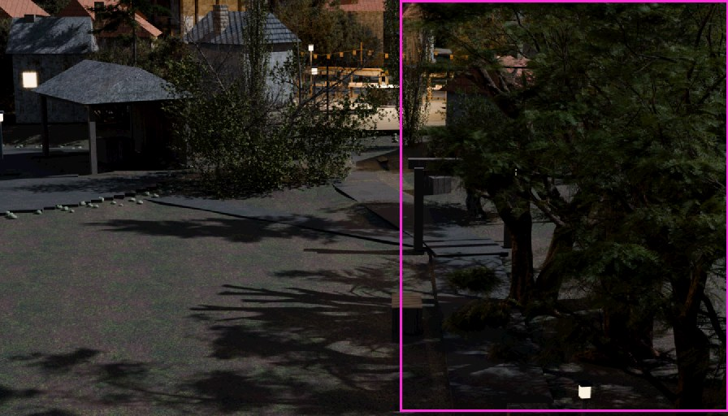
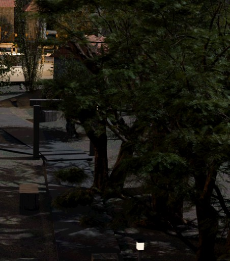
Sceptic: "The foliage serves as normal cinematic foreground framing around the central illuminated
focal point." This is the canopy-wall shape exactly: the way onward is behind foliage.
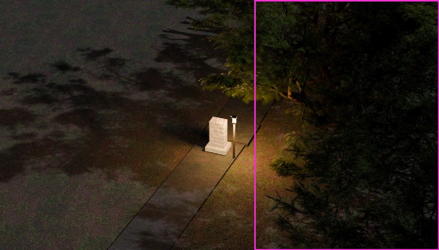
The occluded building is lm_lake-home. Sceptic: "Foreground trees framing the scene are
a standard composition choice in isometric views." The tree is not at the frame edge; it is in front of
the house's front and the path along it.
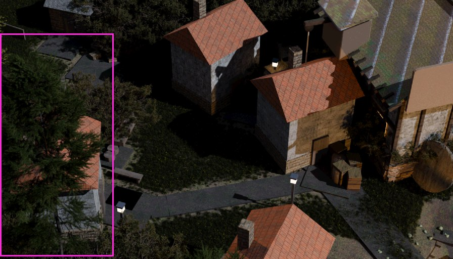
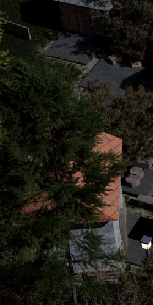
Near-plan camera. The left half of the box is canopy over ground a lane runs through; the main lane on the right still reads, so this is a real occlusion at a lower cost than severity 2 implies.
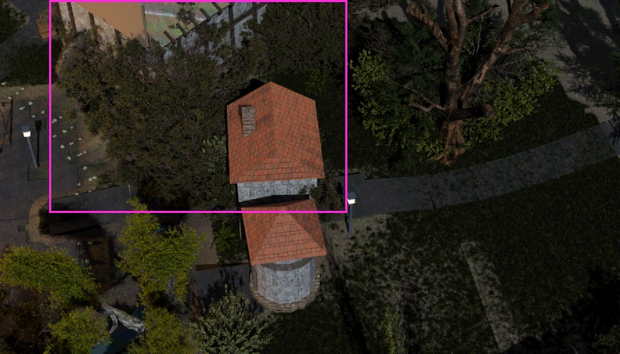
walk_lm_washline-green (F61, F81)The tree does cover a walk pad. But "a tree hides the ground under itself" is close to trivially true of trees, and the frame still reads. The verdict is defensible; the reason given is the template.
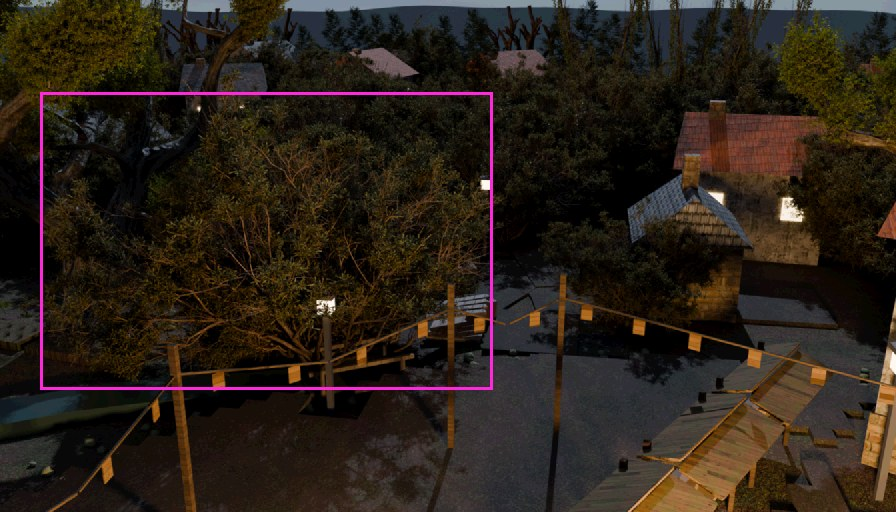
True of the picture, and it is a night plate with an intentional forest boundary. Leaning sceptic.
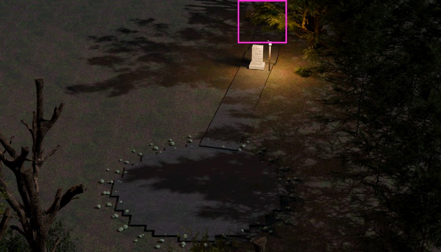
The plaza is wide open, the exits are legible, the trees are at the corners. A generic gripe, correctly killed — with an appeal to convention. This one matters: it is the case the change in §5 gets wrong.
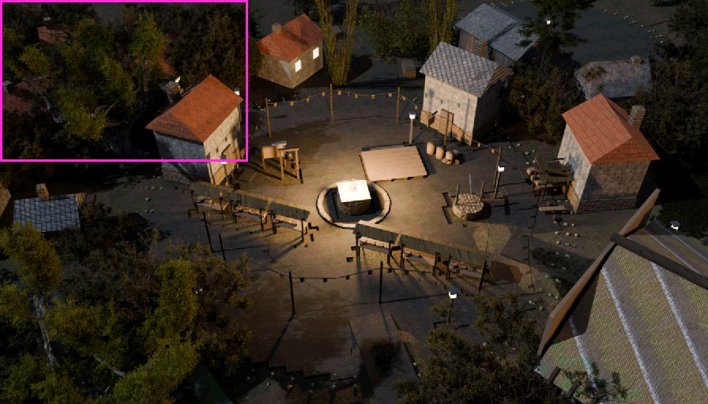
The box is a full-width strip across the top holding both the dark trees and the lit court. A night plate whose subject reads.
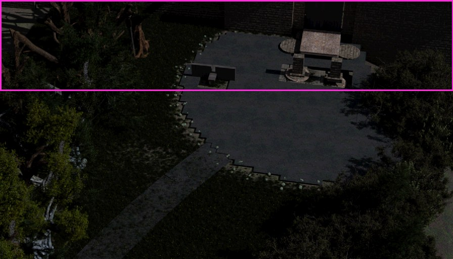
F3 claimed pitch-black tree shadows; the ground is plainly dappled and readable. F39 was a
frame-edge-world quality claim; the edges are populated. Both refutals are correct and both
argue from the picture.
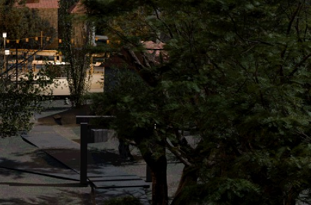
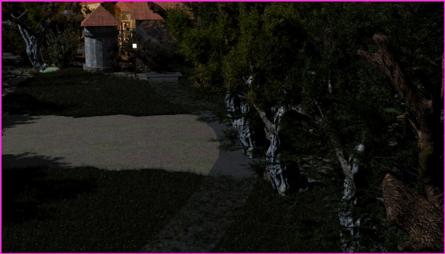
| verdict on the refutal | findings | argued from convention | argued from evidence |
|---|---|---|---|
| the JUDGE was right — the refutal is wrong | 15 | 15 | 0 |
| wash | 4 | 4 | 0 |
| the SCEPTIC was right | 4 | 2 | 2 |
Every refutal in this class that cited what it could see was correct (2/2). Fifteen of the twenty-one that cited convention were wrong. The rhetoric predicts the error — and does not decide it, which is why §5 reports it and does not gate on it.
Scored with the CALIBRATION block's own pre-registered key sets and shot lists, over every
Dellhollow finding the sceptic judged (N = 750 deduped).
| complaint | matches | refuted | naive | checklist |
|---|---|---|---|---|
canopy-wall — the user's #1 | 3 | 0 | 0/3 | 0/0 |
gate-stair | 13 | 5 = 38.5% | 5/10 | 0/3 |
stray-cliff | 52 | 10 = 19.2% | 10/44 | 0/8 |
plank-screens | 24 | 4 = 16.7% | 4/15 | 0/9 |
waterfront-jumble | 144 | 26 = 18.1% | 26/144 | 0/0 |
| matches a user complaint | 228 | 44 = 19.3% | 44/208 = 21.2% | 0/20 |
| everything else | 522 | 99 = 19.0% | 94/372 = 25.3% | 5/150 |
p = 0.92. Directionally the sceptic is gentler on calibration-matching claims in naive mode
(21.2% vs 25.3%). Caveat stated up front: canopy-wall's N is 3 — Dellhollow's
rim canopy was fixed, so stage 1 no longer raises it. A rate on N=3 is not a rate. What can be said is that
the sceptic has never once refuted a match.
The class the appeal-to-intent does reach in Dellhollow is geometry, and it is worth reading — these are refutals of floating-geometry claims on physics grounds:
"Wood naturally possesses buoyancy, so floating flat on the water surface without underlying pillars is expected physics behavior."
"The leaf cluster cards and cliffside mounting are standard practices for this stylized game art aesthetic."
--rhetoric-census, reported and never gatednode tools/scene_redteam.mjs --rhetoric-census all|<stamp>[,<stamp>…] reads finished
run dirs with no API and no re-judging, and every run from now on carries a rhetoric
block in its findings.json. Same shape as key_rim: measure it, report it, never
let a word list delete a finding. Four of the twenty-one convention-argued refutals are fair calls in
convention's clothes, so the tag predicts the error and must not decide it.
The naive head ends: "REFUTE if the thing described is not there, is not what the critic thought it was, is normal for the style, or does not matter." The checklist head already carries the counter-clause ("'It is normal for games' is not a refutation of a quality claim") — and refutes foliage-occlusion 1/47 against naive's 22/54. The difference is in the prompt, not in the pictures.
Arm B adds one paragraph withdrawing that licence for HIDDEN/BLOCKED/UNREADABLE claims only. Stage 2
naive re-asked on run-20260809-emb-round1's own 79 claims, same plates, same claim order,
temperature 0.4, one draw per arm (22 judge calls, 78 k tokens):
| arm | refuted / 79 | foliage-occlusion refuted / 31 | argued from convention |
|---|---|---|---|
| the shipped run's stored verdicts | 21 = 26.6% | 15 | 18/21 = 86% |
| A — the shipped head, re-asked (control) | 15 = 19.0% | 9 | 12/15 = 80% |
| B — the licence withdrawn | 4 = 5.1% | 2 | 1/4 = 25% |
It does exactly what it was designed to do — seven foliage-occlusion claims flip from refuted to upheld and the refutal language turns evidential:
A → "Dense dark foliage along the edge of the frame is standard environmental vignetting to define scene boundaries."
B → "The extremely dark tree foliage completely conceals the terrain and ground environment on the right side of the image."
And it is not shipped, for two named reasons. (1) The control moved on its own: the
shipped head drew 21 refutals in the run and 15 when re-asked, so one draw of this judge carries ±6
refutals out of 79 and N=1 per arm cannot be quoted as a rate. (2) It over-corrects: naive stage 2
falls to 4/79, and one of the eleven refutals it gives up is square F57 — the case §3 looked at
and scored SCEPTIC RIGHT. Withdrawing an appeal to convention should not
withdraw the sceptic. The next round is repeat draws (3 per arm) and a scope narrowed to
category=occlusion, judged against the §3 eye verdicts as the labelled set.
tools/scene_redteam.mjs had no main guard. Importing it for one exported function —
which is how the A/B above gets the real prompt rather than a transcription of it — ran a full 64-call
sweep and wrote an unasked-for run directory. Measured cost: 64 judge calls, 234 k tokens,
run-20260809-184544. That run is kept: it is an independent replicate and it reproduces the
class rate (38.7% against round 1's 39.5%). Guard shipped in d93e8635.
data/rhetoric-census-all.txt — the shipped census over all 30 run dirsdata/rhetoric-census-emb-round1.txt, data/rhetoric-census-emb-replicate.txt — the two Emberbrook sweepsdata/rates.txt — refutal rate per class, deduped and not, with CIs and Fisher testsdata/rhetoric2.txt — the tightened intent classifier's tablesdata/calibration.txt — §4, and every calibration-matching refutal verbatimdata/refutal-text-occlusion.txt — all 51 refutals of an occlusion claim, claim and reasondata/ab-round1.json, data/ab-summary.txt — §5's A/B, per claim per armdata/all-findings-deduped.json — the 1,134-row deduped corpus every number here is read fromcrops/ — the plates and crops of §3